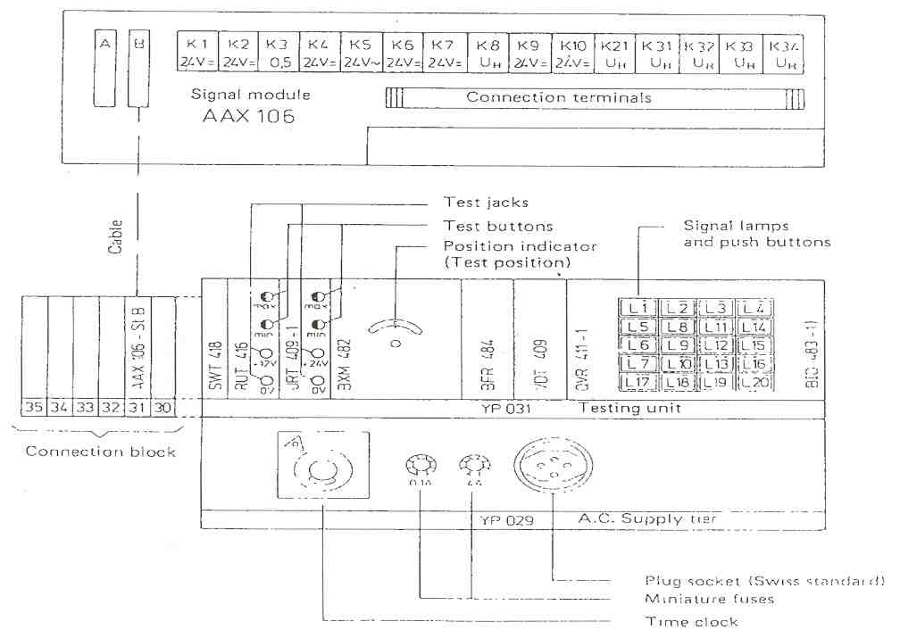
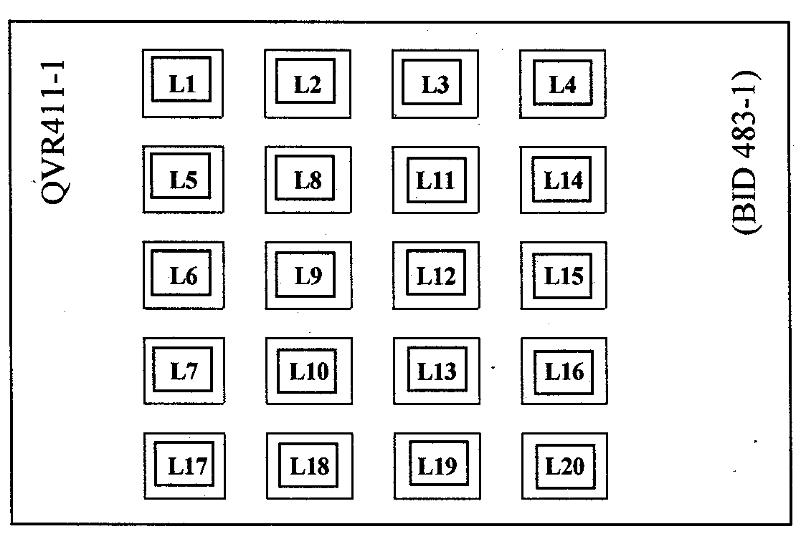
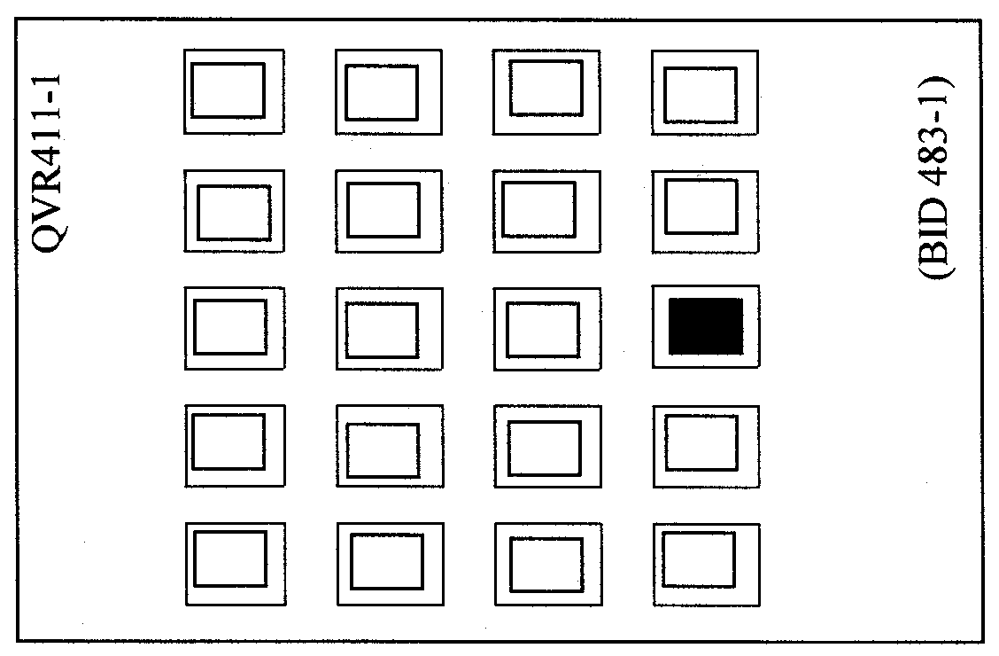

|
 |
Protection Technical Procedure |
|
Equipment:
Bus bar Protection
INX2
BBC |
Document No: BBP-005-r0 |
|
Issued to:
Networks
|
|
Status:
APPROVED |
|
Procedure:
Using Automatic Testing Set
Type YP031 |
Approved Date:
05 Feb 2001 |
|
Date to
be Reviewed: Feb 2006 |
Introduction
The bus bar protection system INX2 based on the directional
comparison principle is used as selective protection in installations with
single and multiple bus bar system. It gives functional reliability owing to the
use of independent criteria. The magnitude, and direction of the current in the
feeder. The magnitude and direction of the differential current
Main Features:
-
Insensitivity to CT saturation.
-
No need for the secondary circuit of the main CT to be switched short
tripping times (6-13 or 10-18 ms & Full selectivity assured with
unrestricted freedom of operation by using an image of The isolators in the
installation that are of importance for its protection.
-
Separate detection of the positive and negative half waves.
-
Permanent monitoring of all input circuits.
-
Built-in automatic test facility type YP 031
-
Easily extendable.
Safety Precautions
Tools and Equipment
Work to be Carried Out
Preparation
-
Review technical
reference material and manufactures manual.
-
Obtain copy of relay setting from field maintenance file and
compare it with the setting on the relay.
-
Inspect the CT secondary circuits and all cabling supplying
the relay.
-
Use the station drawing to isolate breaker failure scheme
associated with this relay disturbance alarms and fault recorder associated
with this relay.
Testing Procedures
-
Obtain authorization from the control center Press the push
button L2 (protection blocked) on QVR 411 ( test and signal module ). its
lamp will lights up indicates that the protection is blocked and the trip
circuits are interrupted
-
Isolate the relay INX2 from the current circuits by making
short circuit between the input current terminals with the output current
terminals for the relay on the terminal block for all feeders one by one
-
Open the links between the input and output sides of the
current terminals block to isolate the relay.
Checking Of Supervision Current Values
-
Inject current on the
input terminals for the relay on phase R for first feeder.
-
Slowly increase the
current until the supervision led R lights up on the module EWW 486-a and
after 5 seconds the lamps L3 and L4 on module QVR 411- 1 lights up
-
Repeat the above step
for the other phase s ( S , T)
-
Repeat the above steps
for all other feeders.
-
Record these values on the test sheet.
-
Reset all the
indication lamps by pressing button LI on module QVR 411-1.
Checking Of Operating Current Values (A I):
-
Inject current on the input terminal for the relay on
phase (R) for first feeder
-
Quickly increase the current to get the operating current
value before making blocking of the relay by the supervision current (Five
seconds)
-
The following lamps lights up:
-
On module TIDL 410- a
- Phase R.
- Number of busbar 1 or 2 according to feeding of the feeder under testing.
- Number of section A or B.
-
On module QVR 411-1
; Lamp Ll lights up (for tripping)
-
On module TIDL 408 a - I; give tripping indicator for all feeders connected
with the feeder under testing. Repeat the above step for all other phases and
feeder
Return Relay and Associated Equipment
-
Remove the test leads
-
Close the links between the input and output sides of the
current terminals block to connect the relay
-
Disconnect the short circuit between the input current
terminals with the output current terminals for all feeders one by one
-
Press the button LI on module QVR411 for resting the
indication lamps. Connect the breaker failure scheme associated with the
relay
-
Connect disturbance alarms and fault recorder associate with
the relay
-
Return the relay to service by pressing button L2 on module
QVR 411.
Return Power Line to Service
-
Check the reading agree with station meters (MW, MVA / Power
factor /Amp/ V)
-
Place a copy of the test results in the field maintenance
file
Test
Sheet
For Bus
bar Protection
INX 2
Substation:
Bus
bar Number:
|
Feeder
Name |
CT
Ratio |
Supervision Values |
Operating Values |
|
Th |
Measuring |
Th |
Measuring |
|
R |
S |
T |
R |
S |
T |
|
|
|
|
|
|
|
|
|
|
|
|
|
|
|
|
|
|
|
|
|
|
|
|
|
|
|
|
|
|
|
|
|
|
|
|
|
|
|
|
|
|
|
|
|
|
|
|
|
|
|
|
|
|
|
|
|
|
|
|
|
|
|
|
|
|
|
|
|
|
|
|
|
|
|
|
|
|
|
|
|
|
|
|
|
|
|
|
|
|
|
|
|
|
|
|
|
|
|
|
|
|
|
|
|
|
|
|
|
|
|
|
|
|
|
|
|
|
|
|
|
|
|
|
|
|
|
|
|
|
|
|
|
|
|
|
|
|
|
|
|
|
|
Tested By:
Signature:
Date:
Automatic Testing Type YP 031
Introduction
The Brown Boveri electronic
bus bar protection system has a
built-in automatic testing unit. To ensure the constant readiness of the
protection system, the auxiliary supplies, the image of the isolators, the trip
isolating relays, the directional comparison, the tripping thyristor and the
main current transformers are continuously monitored.
Testing of the protection circuits is controlled by a test
program, which is applied by a built-in program switch. The test sequence is
stopped when the operation of the protection system no longer takes place in
accordance with the test program command given, On the basis of the signals
indicated, the fault can be traced and then removed by replacement of the
appropriate p.c.b.
General
Description
The automatic testing device consists of testing unit YP031,
AC supply tier YP029 and signal module AAX 106. The trip indicating lamps on
the trip indication lamp part VDL 408 are also of importance for fault
location.

Testing Unit YP031
This shelf is equipped with all the modules, in the form of
plug-in units, necessary for the automatic testing of the busbar protection
RUT 416: 12 V= Stabilizer
In the stabilizing unit RUT 416, the service voltage of18 to 30
V= is reduced to a voltage of 12 V= and at the same time stabilized- This
stabilized voltage is used mainly for the supply to the measuring elements of
the measurement prints MCT 4 18, MCT 426 and VOT 409.
The built-in test jacks serve for measuring the stabilized 12 V=
voltage, in addition a maximum and minimum voltage supervision with testing
facility is provided.
URT 409: Continuous Supervision Unit
All continuous supervisions are centralized on this module and
can be tested by the button "Test" (on OVA 411) The built-in test
jacks serve for measuring the 24 V= service voltage and the test buttons for
testing the maximum and minimum voltage supervision of the same. Through
insertion of the appropriate solder link or diode in this part, the protection
can be automatically blocked by several supervision signals.
BFR 484: Test Impulse Generator and Cycle Supervision
This module supplies the test impulses for the measurement
prints MCT 418 and MCT 425 during the test cycle.
Further it combines all reaction signals to stop the test
sequence in case of a fault in the protection system.
VDT 409: Differential current supervision, Trip- and
intercropping monitoring.
a) Differential current supervision:
Each differential current circuit is provided with a supervision
current transformer (located in EWW 468). Their secondary are connected into a
common summation circuit which feeds the measuring trigger.
If as a result of a faulty current transformer circuit or
wrongly connected ratio, the current in the summation circuit exceeds the preset
value of approx. 5% of the differential current setting in MCT 425, this trigger
picks up and ceports the fault after a Delay of approx. 5 sec.
Trip Monitoring
As the bus bar protection trips, the tripping relays seal in and
the coil current of all tripping relays flows through the two power diodes,
there by producing a voltage of approx. 2 x 0.7 V across the diodes. This voltage
is used for trip monitoring during the test cycle. Together with the signals from
the test program switch (contacts S4 and S5) a check is made for correct or
spurious tripping.
Inter tripping Monitoring
Two conditions are supervised during the test of the
intercropping circuitry. Firstly that all tripping relays are actuated and
secondly the spurious intercropping of the bars that are not under test.
B I D 483 Tripping Release
The tripping thyristor is an important link for the
security of the protection and is therefore continuously supervised
against short circuit. A failure is reported after a delay of 5 sec. In addition
the release signal for the SCR is time delayed for approx. 2 - 4 ms, to avoid an
unwanted triggering clue to interference or switching of the supply voltage that
may be critical. The tripping thyristor is connected in series with the tripping
elements of all feeders. It becomes conductive when a release signal is given by
the differential current measurement (MCT 425). Tripping however, can only occur
if the directional criterion is fulfilled as well.
QVR 411: Test and Signal Module
This module contains all indicating and control elements. Faults
that are shown up by the continuous supervision or in the course of a test run
are indicated by signal lamps,
The signal lamps (24 V=) can be changed from tile front.
Arrangement and function of the signal lamps and push buttons

L1 : "Tripping
and reset"
(Indicator with impulse switch)
The lamp alights at tripping. Actuation of the push button
breaks the seal-in circuit of the tripping relays and resets all signals
L2: "Protection
Blocked"
(Indicator with step switch)
-
This lamp indicates that tile protection is blocked, i.e. that
the trip circuits are interrupted.
-
Blocking of the protection can be initiated by this push button,
by a supervision circuit or during tile automatic test
cycle by tile program switch.
-
Pressing the button once blocks the protection independently of
all other signals. This "blocking by hand" is cancelled by pressing
the button a second time,
L3: "Protection Defect"
Lights up when a fault is present in the protection system or in
the actual testing unit.
L4: "Differential
Current"
Lights up when a fault occurs in the main current transformer
circuits or internally in the differential circuits.
L5: "R" L6: "S" L7: "T"
During testing for correct tripping, the phase lamp, which does
not light up, indicates the measuring system, which has not tripped.
L8: "Trip-block Contractors"
Lights up when there is a fault in one of tile trip isolating
relays-
L9: "Bus Image Contactors
Lights up when there is a fault in the isolator position replica
circuitry.
L10: "Inter tripping"
Lights up when a fault is found in the inter-tripping circuit
(during testing only), if this system trips unselective.
L11: "Test HDT 434"
(Indicator with impulse switch)
a)
During the test run :
The lamp indicates a defective measurement print MGT 425 or
MCT 4 18- by pressing this button and simultaneously turning the rotary test
switch on the directional comparison print HDT 434 The defective print can be
located.
b) Continuous motoring :
Lights up
when there is a fault in one of the directional comparison prints HDT 434 or differential
current measurement prints MCT 425
L12:"HDT 434 not set to zero"
Lights up when one of the rotary test switches on the
directional comparison prints HDT 434 is not in its zero position,
L13: "BID 483"
Lights up when the tripping thyristor (SCR) is conducting, i.e.
a fault is present in a differential current measurement P print MCT 425,
auxiliary print BDD 462 or in module BID 483 itself, as well as with some stops
of the program switch and after tripping.
L14 "AC supply failure"
(Indicator with step switch)
Lights up when the a.c, input voltage fails.
By pressing this button, the start of the test run can be
prevented.
L15 "Supply ON
Lights up when all DC Voltages
are present
L16:"Alarm Reset"
This push button actuates an aux. relay on the signal module AAX
106. The relay's clean contacts can be used at discretion, e.g. for interrupting
or switching on an external alarm circuit.
L17:"Start”
Test run can be instigated by this button at all times, except
when a continuous supervision has picked up or the switch of a static bus image
contactor is in position "0" (Revision)
L18”Reset”
When the test sequence has been stopped, the
program switch can
be brought to it’s “O” position by pressing this button, provided that the
protection has been blocked by hand (illuminated button “ Protection blocked”
press once)
L19: "Test"
Blocking by hand releases the function of this button.
Afterwards all continuous supervision circuits can be checked by means of this
button.
L20: "Lamp Test
When this button is pressed, all lamps within the protection
cabinet must light up,
SWT 418:
Automatic reset
Provision is made in the testing unit to insert this module
which has no influence upon the automatic testing.
When tripping has been effected, the time delayed operation of the automatic
reset SW'T 418 independently interrupts the seal-in circuit of the tripping
relays. The tripping lamps on part YDL 408(a) extinguish automatically at the
mean time.
The tripping lamps on part VDL 408a-l and the signal lamps on part VDL 410 must
be reset by hand.
AC Supply
tier YP029
The following elements are built into this shelf:
-
Miniature fuse 100 mA for timer and transformer
-
Synchronous timer for the (twice) weekly start of The automatic test cycle.
-
Time element connected in series with the timer Contact, to bridge the
switching time.
-
Voltage transformer with 24 V secondary voltage for the supply of the test
motor (BXM 482) and The supervision relay.
-
Plug socket, to Swiss standard with miniature fuse 4A connected in front.
Signal Module AAX 106
The signal module is mounted within the protection cabinet in
uppermost position. It contains the connection terminals and auxiliary relays
for signalization with the following functions -
K 1 /K2: "Protection blocked" by a continuous
supervision.
K3 "Protection defect"
At stop of the test cycle by signal bus image contactors by
signal trip-block contactors by signal HDT 434 not set to zero by KI (blocked)
K4: "Protection tripped"
K5: “AC supply failure"
K6: "Protection blocked" by hand
by test program switch
K7: "Differential Current"
K8: "Protection defect" loss of external d,c, supply
voltage
K9: "Revision" Bus image supervision switched off
Start of test run prevented
K10: "Alarm reset"
K21 "External reset" of tripping relays
K31-K34 are used as auxiliary relays for couplers with one set
of CT’s or for special use
Trip indication VDL 408
The lamps on this module are each associated with one feeder.
They light up when the respective feeder is tripped by the bus bar protection.
In service, the lamps indicate the circuit breakers that have
been tripped by the bus bar protection.
During testing, they indicate the feeder in which a fault is
present.
Service
Before carrying out any work within the cabinet, the button "Protection
blocked" must be actuated.
If the program switch remains stationary at any position, the number of this
position and all indicated signals are to be noted. Before resetting to zero
by pressing the-reset" button, the already illuminated button
"protection blocked" is to be pressed once, to interrupt the
tripping circuits independently of the program switch (Thus releasing
"reset").
Prints and modules are only to be changed when the supply voltage is
switched off (by means of circuit breaker on module EBP in the DC supply
tier).
When changing prints or modules, avoid touching the print contacts.
(Contacts can be cleaned with tetrachloride or other cleansers e,g. Contact
60).
Static bus image contactors (type BDW 475) For revision of the isolator
auxiliary contacts the built-in switch should be placed in position "0"- The
a.c. voltage produced in the bus image contactor is then disconnected The bus
image supervision is switched off.
The external signal "Revision" is given and start of
the test run is prevented. (During automatic testing, the bus image contactors
are operated and will not return to their original position if the auxiliary
supply is interrupted).
The busbar protection can remain in service as long as the
isolators are not operated. (The state of connection is stored in the bus Image
contactor, but the contactor can no longer follow a switching operation).
After termination of the revision, the bus image contactor is to
be switched on again, whereby the external signal disappears.
Test of the continuous supervisions:
“Trip block contactors” immediately
“Protection detect” immediately
"Differential current" after 5 sec,
"BID 483" after 5 sec. (5")
"Bus image contactors" after 10 sec.
Lamp on tile coupler
Print SDT419 immediately
Lamps (R, S, T) on
differential current
transformer Module immediately
EWW 468a
To test the 24 V voltage supervision on module URT 4.09, the
buttons on this module have to be pressed successively.
Lamp "Supply ON" goes out.
To test the 12 V voltage supervision on module RUT 416, the
but-tons on this module have to be pressed successively.
Lamp "Supply ON" goes out.
To test the logic circuitry on the coupler print S DT 419, the
button on this print has to be pressed, whereby the lamp on the print goes
out.
To test the coupler blocking logic on print BDT 473, the
buttons on this print have to be pressed successively, whereby tile lamp on
this print lights up each time-
Test jacks on EVM 468
Test jacks on the differential current transformer module EWW
468 serve for the measurement of the differential current at the input to the
measurement prints IVICT 425. The module EWW 468a has additional LED's
indicating in which phase a Differential current run.
External signals
(One clean n/o contact for each)
"Protection tripped" Indicates that the
bus bar
protection has operated.
"Protection blocked" Indicates that the protection
is blocked by Hand, by a supervision circuit or by the Testing unit.
"Protection defect" Indicates a fault in the
protection itself.
"Protection blocked" and "Protection
defect" Both signals together indicate a fault found during the course of
a test run or pick-up of a supervision circuit.
Differential current" Indicates a fault in the current
transformer circuits
"AC supply failure" Indicates loss of the AC input voltage
"Revision" Indicates that the switch on one of the
bus image contactors is not in its service position "'I "
Continuous supervision - test position "0"
Continuously supervised are:
Electronic service voltage 24 V
12 V stabilized voltage
DC input voltage
AC input voltage
Image of isolator wiring and bus image contactors
Trip isolating relays
Tripping relays (refer 4.1) HDT 434 zero position
HDT 434 output (tripping release)
Tripping thyristor
Differential current
Each continuous supervision circuit can be tested by means of
test buttons.
The pick-up of any continuous supervision circuit is
signalized internally and externally.
The following supervisions can be used to block the protection
automatically :
12 V stabilized voltage
Image of isolators and bus image contactors
Tripping thyristor
Differential current
The protection will be blocked if the respective link or diode
is soldered in place within the module URT 409. In this case when one of the
above supervisions picks up, additional signals will be given, which are
marked by “***” in the following list. Normally the protection is equipped
with the 4 links before delivery
Service Position

If the lamp "Supply ON" lights up alone, this
indicates the operational readiness of the protection system, The following
pages list each possible fault which could be indicated, and detail first the
"external signals", the "internal signals", and then the
cause of defect and remedies
Test Sequence
During the test sequence, the functions of the
bus bar protection
are tested in 13 on the number of bus bars.
This test run takes about 4 seconds (50 Hz).
During this time, the bus
bar protection is blocked, i.e. The
external signal "Protection blocked" is given. The tripping circuits
are interrupted by means of the trip isolating relays. After a successful
test, the protection automatically returns into service.
If a fault is found in the protection during the test cycle, the
program switch stops at a certain test position and the external signals
"Protection blocked" and "Protection defect"
are given.
In stations with sectionalizes, the additional signal
"Differential current" can appear.
These external signals are not mentioned in the following list
of possible fault positions.
The internal signals and the position of the program switch
(test position) give information about the possible defect. The remedies listed on the following pages are to be
carried out
with the program switch in position "0" and with the supply voltage
for the electronic system switched off, except where noted otherwise
Before resetting to zero by the button "Reset", the
protection must be blocked by hand, i-e, the already illuminated button
"Protection blocked" must be pressed once.
A new test run must be made to ensure that the defect has
actually been removed. If prints have to be changed one by one (in exchange
against spares), several test runs may be necessary.
Having eliminated the defect, the blockage ran be r-canceled by
pressing the button "Protection blocked a second time, thereby putting the
protection into service.
Remarks
If no defect, mentioned under test positions, can be determined,
it is possible that the test program switch BXM482 (a) is defect. In this case
the contacts must be checked and cleaned. If necessary, the program switch must
be replaced,
15o Control whether all tripping
circuits are interrupted.
21o Control whether the feeder current measurement prints will prevent
tripping when no current is flowing, but both tripping release signals are
present from differential and directional criterions,
27o Control whether all differential
current measurement prints have picked up.
39o Control whether all inputs to the
directional comparison prints have an active signal.
15o Control whether all differential
current measurement prints block tripping.
58o Control whether the switching
and / or
coupler logic prints can block the tripping release from directional comparison,
when the bus Image
is switched off.
72o Control whether all feeders trip in all
phase
(This test is suppressed for single bus bar systems)
93o Control whether the directional Comparison
system can block for bus bar I in the positive system
95o idem in the negative system
107o: idem for
bus bar
I1 in the negative system
110o idem for
bus bar
I1 in the positive system
127o
idlers for bus bar III in the positive system
132o idem for
bus bar III in the negative system
147o idem for
bus bar IV in the negative system
152o idem for
bus bar IV in the positive system
170o Control whether the
intercropping circuitry operates
selectively for bus bar I.
173o Control whether all tripping relays have operated
196o same as pos. 170o for
bus bar II
199o same as pos. 173o
222o same as pos. 170o for
bus bar III
225o same as pos. 173o
248o same as pos. 170o for
bus bar IV
251o same as pos. 173o
280o Control whether the negative system alone can trip all
feeders.
309o Control whether the positive system alone can trip ail
feeders.
347o Control whether all tripping relays have dropped off. If
this should not be the case, the program switch nevertheless returns to its zero
position